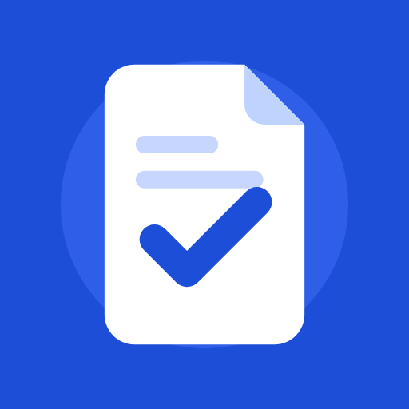

FileMendEffective date: October 22, 2026 · App: FileMend (com.hallel.filemendcompressconvert)
FileMend helps you make photos, PDF files and videos smaller so they fit a website's upload limit. We built it so that your files never leave your phone.
All processing (compressing, converting, merging, trimming) happens on your device. FileMend does not upload, send or share your files with us or anyone else. A file leaves the app only when you tap “Send”, “Save” or “Open” yourself, and only to the app or folder you choose.
Your original file is never changed. Temporary working copies are stored in the app's private storage and are deleted automatically.
None. FileMend has no account, no ads, no analytics and no tracking. We do not collect personal information, device identifiers, location, contacts or usage data.
To show “Recently saved”, the app keeps a short list (up to 20 items) of the files you saved: file name, size, date and where it was saved. This list stays on your phone, is never sent anywhere, and can be deleted at any time with the “Clear” button. It is also removed when you uninstall the app.
Files are chosen through the standard Android picker, so FileMend can read only the files you pick.
FileMend does not collect data from anyone, including children.
If this policy changes, the new version will be published on this page with a new effective date.
Questions: zvyagin121212@gmail.com
Действует с 22 октября 2026 г. · Приложение: FileMend (com.hallel.filemendcompressconvert)
FileMend уменьшает фото, PDF и видео, чтобы они подходили под лимит загрузки сайта. Приложение устроено так, что ваши файлы не покидают телефон.
Вся обработка (сжатие, конвертация, объединение, обрезка) происходит на устройстве. FileMend не загружает и не передаёт ваши файлы ни нам, ни кому-либо ещё. Файл покидает приложение, только когда вы сами нажимаете «Отправить», «Сохранить» или «Открыть», — и только туда, куда вы выбрали.
Оригинал никогда не изменяется. Временные рабочие копии хранятся в закрытой папке приложения и удаляются автоматически.
Никакие. В FileMend нет аккаунтов, рекламы, аналитики и слежки. Мы не собираем личные данные, идентификаторы устройства, местоположение, контакты или статистику использования.
Для раздела «Недавно сохранённые» приложение хранит короткий список (до 20 записей) сохранённых файлов: имя, размер, дата и место сохранения. Список остаётся на телефоне, никуда не отправляется и удаляется кнопкой «Очистить» или при удалении приложения.
Файлы выбираются через стандартное окно Android, поэтому приложение видит только те файлы, которые вы выбрали.
FileMend не собирает данные ни у кого, в том числе у детей.
Если политика изменится, новая версия появится на этой странице с новой датой.
Вопросы: zvyagin121212@gmail.com
בתוקף מ-22 באוקטובר 2026 · אפליקציה: FileMend (com.hallel.filemendcompressconvert)
FileMend מקטינה תמונות, קובצי PDF וסרטונים כדי שיתאימו למגבלת ההעלאה של אתר. האפליקציה בנויה כך שהקבצים שלך לא יוצאים מהטלפון.
כל העיבוד (כיווץ, המרה, איחוד, קיצור) מתבצע במכשיר. FileMend לא מעלה ולא מעבירה את הקבצים שלך אלינו או לאף אחד אחר. קובץ יוצא מהאפליקציה רק כשלוחצים בעצמכם „שליחה”, „שמירה” או „פתיחה” — ורק למקום שבחרתם.
הקובץ המקורי לעולם לא משתנה. עותקי עבודה זמניים נשמרים באחסון הפרטי של האפליקציה ונמחקים אוטומטית.
שום נתונים. ב-FileMend אין חשבון, אין פרסומות, אין אנליטיקה ואין מעקב. איננו אוספים מידע אישי, מזהי מכשיר, מיקום, אנשי קשר או נתוני שימוש.
לצורך „נשמרו לאחרונה” האפליקציה שומרת רשימה קצרה (עד 20 פריטים) של הקבצים ששמרתם: שם, גודל, תאריך ומיקום השמירה. הרשימה נשארת בטלפון, לא נשלחת לשום מקום ונמחקת בכפתור „ניקוי” או בהסרת האפליקציה.
הקבצים נבחרים דרך חלון הבחירה הרגיל של Android, ולכן האפליקציה רואה רק את הקבצים שבחרתם.
FileMend לא אוספת נתונים מאף אחד, כולל ילדים.
אם המדיניות תשתנה, הגרסה החדשה תפורסם בדף הזה עם תאריך חדש.
שאלות: zvyagin121212@gmail.com